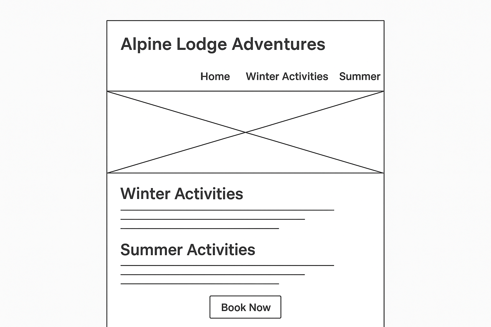

Site Name
Name: Alpine Lodge Adventures
This name reflects a mountain lodge where visitors can experience exciting outdoor activities during both winter and summer. It emphasizes adventure, variety, and year-round fun.
Optional domain availability: alpinalodgeadventures.com
Site Purpose
The purpose of this site is to showcase all the activities available at the Alpine Ski Lodge throughout the year. It will highlight winter activities like skiing, snowboarding, and snowshoeing, as well as summer activities like hiking, mountain biking, and ziplining. The site will also provide booking information, seasonal event details, and contact options for guests.
Scenarios
- What activities can families with kids do at the lodge in the winter?
- Are there summer activities besides hiking, and how do I book them?
- What equipment rentals are available for skiing or biking?
Color Schema
The site will use a color palette inspired by mountains, snow, and summer sunshine.
- Primary Color: #0a9396 (teal – used for headers and navigation)
- Accent Color: #ee9b00 (warm orange – used for buttons and highlights)
- Background Color: #f0f8ff (light icy blue – page background)
Typography
- Heading Font: "Montserrat", sans-serif (for titles, navigation, and emphasis)
- Body Font: "Roboto", sans-serif (for paragraphs and general content)
- Accent Font: "Lobster", cursive (for logo and decorative headings)
Wireframes
Mobile View:
Desktop View:
